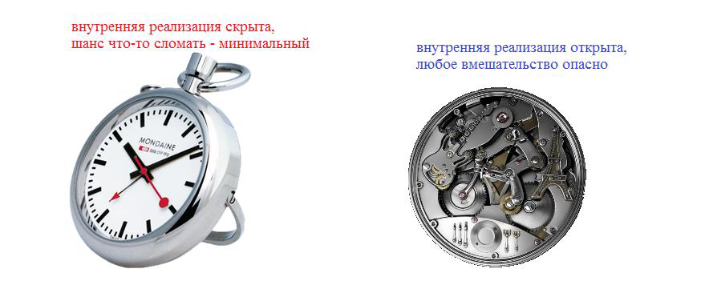
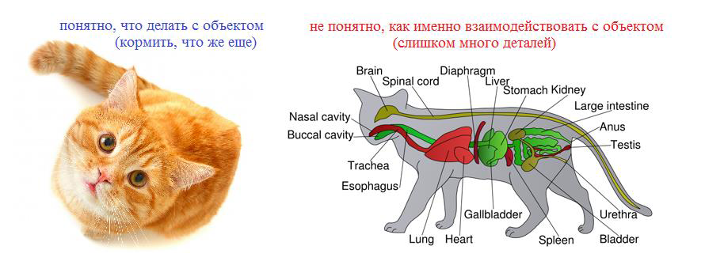
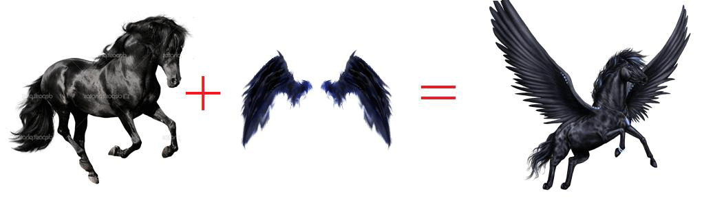
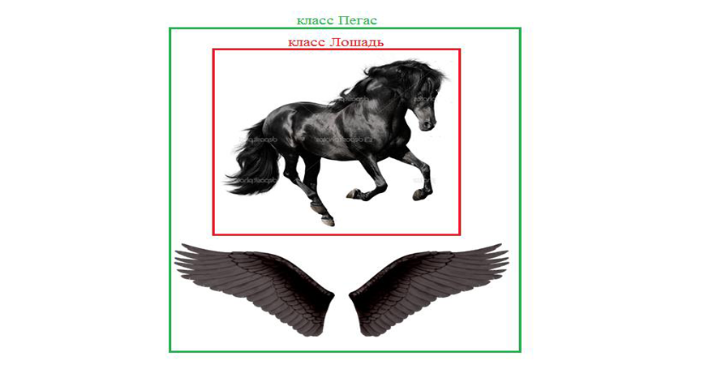
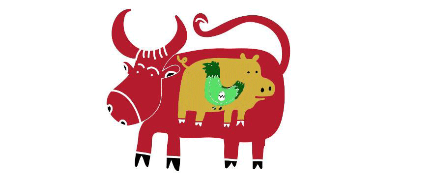
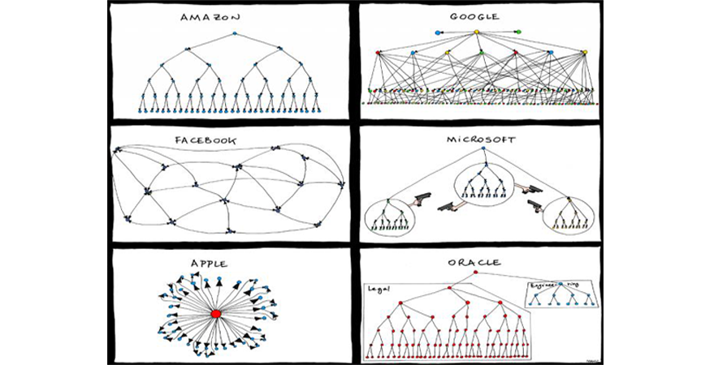
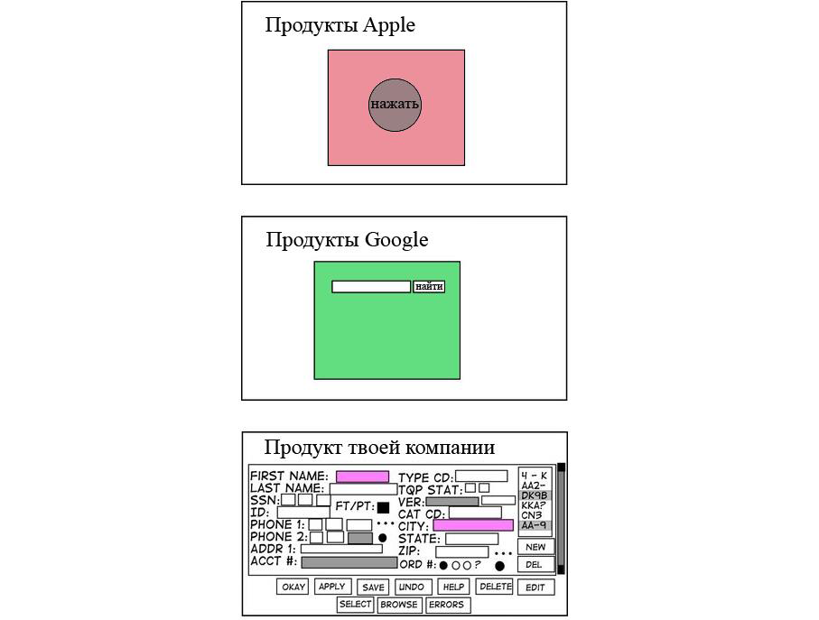

- Здорово, боец!
- Здравия желаю, капитан Бобров!
- У меня для тебя шикарная новость. Вот тебе задания для закрепления полученных навыков. Выполняй их каждый день, и твои навыки будут расти с неимоверной скоростью. Они специально разработаны для выполнения их в Intellij IDEA.
| Дополнительные задания для выполнения в Intellij Idea |
|---|
| 1. Адам и Ева Написать два класса Adam(Адам) и Eve(Ева). Унаследовать Еву от Адама. |
| 2. AppleIPhone и SamsungGalaxyS2 Написать два класса AppleIPhone и SamsungGalaxyS2. Унаследовать SamsungGalaxyS2 от AppleIPhone. |
| 3. Эволюция Написать четыре класса: Fish(Рыбы), Animal(Животные), Ape(Обезьяны), Human(Человек). Унаследовать животных от рыб, обезьян от животных и человека от обезьян. |
| 4. Религия Написать три класса: Judaism(Иудаизм), Christianity(Христианство), Islam(Мусульманство). Унаследовать христианство от иудаизма и мусульманство от христианства. |
| 5. От школьника к рабству Написать четыре класса: Schoolboy(школьник), Student(студент), Worker(Сотрудник), Slave(Раб). Унаследовать студента от школьника, сотрудника от студента, раба от сотрудника. |
| 6. Первая правильная «цепочка наследования» Расставь правильно «цепочку наследования» в классах: Pet(домашнее животное), Cat(кот), Dog(собака). |
| 7. Вторая правильная «цепочка наследования» Расставь правильно «цепочку наследования» в классах: Pet(домашнее животное), Cow(корова), Dog(собака), Pig(свинья), Animal(животное). |
| 8. Третья правильная «цепочка наследования» Расставь правильно «цепочку наследования» в классах: Pet(домашнее животное), Cat(кот), Dog(собака), Car(машина). |
| 9. Четвертая правильная «цепочка наследования» Расставь правильно «цепочку наследования» в классах: House(дом), Cat(кот), Dog(собака), Car(машина). |
| 10. Пятая правильная «цепочка наследования» Расставь правильно «цепочку наследования» в классах: House(дом), Cat(кот), Dog(собака), Car(машина), Animal(животное), Assets(имущество). |
- Те задания были для духов. Для дедушек я добавил бонусные задания повышенной сложности. Только для старослужащих.
| 1. Нужно исправить программу, чтобы компилировалась и работала. Задача: Исправь наследование в классах: Cat, Dog, Pat, House, Airplane. |
| 2. Нужно добавить в программу новую функциональность. Задача: Добавь общий базовый класс к классам-фигур: (фигуры из шахмат). |
| 3. Задача по алгоритмам. Задача: Написать метод, который возвращает минимальное и максимальное числа в массиве. |
- Привет, Амиго! Давно не виделись. Я тут нашел новую подборку шикарного видео. Тебе точно понравится.
- Хотелось бы найти побольше сторонних статей по сегодняшнему материалу. Проблема не в том, что их нет, а в том, что ООП – это вещи, которые нужно пробовать руками, а не читать про них статьи. Но все же кое-что для тебя у меня есть.
- Привет, Амиго! Сегодня ты станешь признанным экспертом в инкапсуляции. Попробуй решить эти задачи:
| Задачи |
|---|
| 1. Все скрыто Скрыть все внутренние переменные класса Cat. |
| 2. Доступ есть Скрыть все внутренние переменные класса Cat, но только те, к которым остается доступ с помощью методов. |
| 3. Ничего не поменяешь Скрыть все внутренние переменные класса Cat, а также методы, позволяющие менять внутреннее состояние объектов класса Cat. |
| 4. Инкапсуляция для классов Cat и Dog Скрыть все внутренние переменные класса Cat и Dog. Также скрыть все методы, кроме тех, с помощью которых эти классы взаимодействуют друг с другом. |
| 5. Добавь недостающие переменные Посмотри внимательно на методы и добавь недостающие переменные. |
- Привет, Амиго! Хочу посвятить сегодняшнюю лекцию инкапсуляции. Ты уже знаешь в общих чертах, что это такое.
В чем же преимущества инкапсуляции? Их достаточно много, но я могу выделить четыре, на мой взгляд, основных:
1) Валидное внутреннее состояние.
В програмах часто возникают ситуации, когда несколько классов, взаимодействуют с одним и тем же объектом. В результате их совместной работы нарушается целостность данных внутри объекта - объект уже не может продолжить нормально работать.
Поэтому объект должен следить за изменениями своих внутренних данных, а еще лучше – проводить их сам.
Если мы не хотим, чтобы какая-то переменная класса менялась другими классами, мы объявляем ее private, и тогда только методы её же класса смогут получить к ней доступ. Если мы хотим, чтобы значения переменных можно было только читать, но не изменять, тогда нужно добавить public getter для нужных переменных.
Например, мы хотим, чтобы все могли узнать количество элементов в нашей коллекции, но никто не мог его поменять без нашего разрешения. Тогда мы объявляем переменную private int count и метод public getCount().
Правильное использование инкапсуляции гарантирует, что ни один класс не может получить прямой доступ к внутренним данным нашего класса и, следовательно, изменить их без контроля с нашей стороны. Только через вызов методов того же класса, что и изменяемые переменные.
Лучше исходить из того, что другие программисты всегда будут использовать твои классы самым удобным для них образом, а не самым безопасным для тебя (для твоего класса). Отсюда и ошибки, и попытки заранее избавиться от них.
2) Контроль передаваемых аргументов.
Иногда нужно контролировать аргументы, передаваемые в методы нашего класса. Например, наш класс описывает объект "человек" и позволяет задать дату его рождения. Мы должны проверять все передаваемые данные на их соответствие логике программы и логике нашего класса. Например, не допускать 13-й месяц, дату рождения 30 февраля и так далее.
- А зачем кому-то указывать в дате рождения 30 февраля?
- Во-первых – это может быть ошибка ввода данных от пользователя.
Во-вторых, прежде чем программа будет работать как часы, в ней будет много ошибок. Например, возможна такая ситуация.
Программист пишет программу, которая определяет людей у кого день рождения послезавтра. Например, сегодня 3 марта. Программа добавляет к текущему дню месяца число 2 и ищет всех, кто родился 5 марта. Вроде бы все верно.
Вот только, когда наступит 30 марта программа не найдет никого, т.к. в календаре нет 32 марта. В программе становится гораздо меньше ошибок, когда в методы добавляют проверку переданных данных.
- Помню, когда мы изучали ArrayList, я смотрел его код, и там была проверка индекса в методах get и set: index больше или равен нулю и меньше длины массива. Там еще кидалось исключение, если в массиве нет элемента с таким индексом.
- Да, это классический пример проверки входных данных.
3) Минимизация ошибок при изменении кода классов.
Представим, что мы написали один очень полезный класс, когда участвовали в большом проекте. Он так всем понравился, что другие программисты начали использовать его в сотнях мест в своем коде.
Класс оказался настолько полезен, что ты решил его улучшить. Но если ты удалишь какие-то методы этого класса, то код десятков людей перестанет компилироваться. Им придется срочно все переделывать. И чем больше переделок, тем больше ошибок. Ты поломаешь кучу сборок, и тебя будут ненавидеть.
А когда мы меняем методы, объявленные как private, мы знаем, что нигде нет ни одного класса, который вызывал бы эти методы. Мы можем их переделать, поменять количество параметров и их типы, и зависимый код будет работать дальше. Ну, или как минимум, компилироваться.
4) Задаем способ взаимодействия нашего объекта со сторонними объектами.
Мы можем ограничить некоторые действия, допустимые с нашим объектом. Например, мы хотим, чтобы объект можно было создать только в одном экземпляре. Даже если его создание происходит в нескольких местах проекта одновременно. И мы можем сделать это благодаря инкапсуляции.
Инкапсуляция позволяет добавлять дополнительные ограничения, которые можно превратить в дополнительные преимущества. Например, класс String реализован как immutable (неизменяемый) объект. Объект класса String неизменяем с момента создания и до момента смерти. Все методы класса String (remove, substiring, ...), возвращают новую строку, абсолютно не изменяя объект, у которого они были вызваны.
- Ничего себе. Вот оно как, оказывается.
- Инкапсуляция очень интересная штука.
- Ага.
- Привет, Амиго! Вот тебе очередная порция задач на наследование. Наслаждайся.
| Задачи |
|---|
| 1. Лошадь и пегас Написать два класса: Horse(лошадь) и Pegas(пегас). Унаследовать пегаса от лошади. |
| 2. Домашние животные Написать три класса: Pet(домашнее животное), Cat(кот) и Dog(собака). Унаследовать кота и собаку от животного. |
| 3. В гостях у бабушки Написать шесть классов: Animal(животное), Cow(корова) и Pig(свинья), Sheep(овца), Bull(бык), Goat(козел). Унаследовать корову, свинью, овцу, быка и козла от животного. |
| 4. Все мы работники Написать четыре класса: Employee(сотрудник), Manager(управляющий), Chief(директор) и Secretary(секретарь). Унаследовать управляющего, директора и секретаря от сотрудника. |
| 5. ИТ-компания Написать девять классов: Worker(сотрудник), Clerk(клерк), IT(ИТ-специалист), Programmer(программист), ProjectManager(менеджер проекта), CTO(технический директор), HR(рекрутер), OfficeManager(офис-менеджер), Cleaner(уборщик). Унаследовать программиста, менеджера проекта и технического директора от ИТ-специалиста. Унаследовать рекрутера, уборщика и офис-менеджера от клерка. Унаследовать клерка и ИТ-специалиста от сотрудника. |
- Привет, Амиго! Сейчас будет одна тема, которой, я думаю, ты будешь частенько пользоваться. Это – наследование.
Программирование, для несведущих, неотличимо от магии. Поэтому начну с такой интересной аналогии...
Предположим, что ты волшебник и хочешь создать летающую лошадь. С одной стороны, ты бы мог попробовать наколдовать пегаса. Но т.к. пегасов в природе не существует, это будет очень не просто. Придется очень много делать самому. Куда проще взять лошадь и приколдовать ей крылья.
В программировании такой процесс называется «наследование». Предположим тебе нужно написать очень сложный класс. Писать с нуля долго, потом еще долго все тестировать и искать ошибки. Зачем идти самым сложным путем? Лучше поискать – а нет ли уже такого класса?
Предположим, ты нашел класс, который своими методами реализует 80% нужной тебе функциональности. Ты можешь просто скопировать его код в свой класс. Но у такого решения есть несколько минусов:
1) Найденный класс уже может быть скомпилирован в байт-код, а доступа к его исходному коду у тебя нет.
2) Исходный код класса есть, но ты работаешь в компании, которую могут засудить на пару миллиардов за использование даже 6 строчек чужого кода. А потом она засудит тебя.
3) Ненужное дублирование большого объема кода. Кроме того, если автор чужого класса найдет в нем ошибку и исправит ее, у тебя эта ошибка останется.
Есть решение потоньше, и без необходимости получать легальный доступ к коду оригинального класса. В Java ты можешь просто объявить тот класс родителем твоего класса. Это будет эквивалентно тому, что ты добавил код того класса в код своего. В твоем классе появятся все данные и все методы класса-родителя. Например, можно делать так: наследуемся от «лошади», добавляем «крылья» - получаем «пегаса»
- Очень интересно, продолжай.
- Наследование можно использовать и для других целей. Допустим, у тебя есть десять классов, которые очень похожи, имеют совпадающие данные и методы. Ты можешь создать специальный базовый класс, вынести эти данные (и работающие с ними методы) в этот базовый класс и объявить те десять классов его наследниками. Т.е. указать в каждом классе, что у него есть класс-родитель – данный базовый класс.
Также как преимущества абстракции раскрываются только рядом с инкапсуляцией, так и преимущества наследования гораздо сильнее при использовании полиморфизма. Но о нем я расскажу завтра. Сегодня же мы рассмотрим несколько примеров использования наследования.
Предположим, мы пишем программу, которая играет в шахматы с пользователем, тогда нам понадобятся классы для фигур. Какие бы ты предложил классы, Амиго?
- Король, Ферзь, Слон, Конь, Ладья и Пешка.
- Отлично. Ничего не упустил.
А какие бы данные ты предложил хранить в этих классах?
- Координаты x и y, а также ее ценность (worth). Ведь некоторые фигуры ценнее других.
- А в чем отличия этих классов?
- Отличия в том, как они ходят фигуры. В поведении.
- Да. Вот как можно было бы описать их в виде классов
| class King { int x; int y; int worth; void kingMove() { //код, решающий, //как пойдет король } } |
class Queen { int x; int y; int worth; void queenMove() { //код, решающий, //как пойдет ферзь } } |
class Rook { int x; int y; int worth; void rookMove() { //код, решающий, //как пойдет ладья } } |
| class Knight { int x; int y; int worth; void knightMove() { //код, решающий, //как пойдет конь } } |
class Bishop { int x; int y; int worth; void bishopMove() { //код, решающий, //как пойдет слон } } |
class Pawn { int x; int y; int worth; void pawnMove() { //код, решающий, //как пойдет пешка } } |
- Да, именно так я бы и написал.
- А вот, как можно было бы сократить код с помощью наследования. Мы могли бы вынести одинаковые методы и данные в общий класс. Назовем его ChessItem. Объекты класса ChessItem не имеет смысла создавать, так как ему не соответствует ни одна шахматная фигура, но от него было бы много пользы:
| class King extends ChessItem { void kingMove() { //код, решающий, //как пойдет король } } |
class Queen extends ChessItem { void queenMove() { //код, решающий, //как пойдет ферзь } } |
class Rook extends ChessItem { void rookMove() { //код, решающий, //как пойдет ладья } } |
| class ChessItem { int x; int y; int worth; } |
||
| class Knight extends ChessItem { void knightMove() { //код, решающий, //как пойдет конь } } |
class Bishop extends ChessItem { void bishopMove() { //код, решающий, //как пойдет слон } } |
class Pawn extends ChessItem { void pawnMove() { //код, решающий, //как пойдет пешка } } |
- Как интересно.
- Именно! Особенно много преимуществ мы получаем, когда в проекте тысячи различных объектов и сотни классов. Тогда правильно подобранными классами можно не только существенно упростить логику, но и сократить код в десятки раз.
- А что нужно чтобы унаследовать какой-то класс?
- Для этого после объявления нашего класса нужно указать ключевое слово extends и написать имя родительского класса. Унаследоваться можно только от одного класса.
На картинке мы видим «корову», унаследованную от «свиньи». «Свинья» унаследована от «курицы», «курица» от «яйца». Только один родитель! Такое наследование не всегда логично. Но если есть только свинья, а очень нужна корова, программист зачастую не может устоять перед желанием сделать «корову» из «свиньи».
- А если мне хочется унаследоваться от двух классов. Можно же что-то сделать?!
- Почти ничего. Множественного наследования классов в Java нет: класс может иметь только одного класса-родителя. Но есть множественное наследование интерфейсов. Это немного снижает остроту проблемы.
- Ясно. А что такое интерфейс?
- Про интерфейсы я расскажу тебе завтра, а пока давай продолжим разбираться с наследованием.
- Я достал для тебя секретные материалы. Это лекции высочайшего качества. Если ты сможешь прочесть и понять их, то твое будущее навсегда изменится. Это лучшее из того, что ты мог прочитать в жизни. Ну же, не теряй времени.
- Привет, Амиго! Хотела тебе рассказать еще об одном преимуществе использования ООП. Видишь ли – программы больше напоминают не строения, а животных. Их не строят, их выращивают. Разработка - это постоянные изменения. В строительстве ты можешь иметь хороший план и четко ему следовать. В случае с разработкой программ – это не так.
Очень часто что-то нельзя сделать тем способом, который ты себе наметил, и приходится многое переделывать. Еще чаще меняются требования заказчика.
- А если заказчик проекта дал очень точную его спецификацию?
- Тогда взгляни на ситуацию во времени. Успех продукта приведет к тому, что заказчик захочет выпустить его новую версию, а затем еще и еще. И, конечно, нужно будет всего лишь добавить «небольшие изменения» в уже существующий продукт. Поэтому разработка продукта – это последовательность постоянных изменений. Только масштаб времени разный. Каждая новая версия может выходить раз в неделю, раз в месяц или раз в полгода.
- И какой вывод можно сделать из всего этого?
- Внутреннюю структуру продукта нужно поддерживать в таком состоянии, которое позволит внести значительные (и не очень) изменения с минимальными переделками.
- И как такое сделать?
- Мы уже говорили, что программа состоит из объектов, которые взаимодействуют между собой. Давай нанесем на доску все объекты нашей программы, обозначив их жирными точками. И проведем от каждого объекта (точки) стрелочки ко всем объектам (точкам), с которыми он взаимодействуют.
Теперь мы будем объединять объекты (точки) в группы. Точки должны быть объединены в группу, если связи между ними гораздо интенсивнее, чем с остальными точками. Если большинство стрелочек от точки идет к точкам ее же группы, тогда разбиение на группы произошло правильно. Точки внутри одной группы мы будем называть сильно связанными, а точки из разных групп – слабо связанными.
Это называется «принцип слабой связности». Программа разбивается на несколько частей, часто слоев, логика которых сильно завязана на их внутреннее устройство и очень слабо на другие слои/части. Обычно взаимодействие слоев очень регламентировано. Один слой может обращаться ко второму и использовать только небольшую часть его классов.
- Тот же принцип «разделения на отделы» только в большем масштабе?
- Именно. Это приводит к тому, что мы можем реорганизовать отдел, повысить его эффективность, нанять в него еще больше людей, но если мы не изменим протокол взаимодействия других отделов с нашим, то все сделанные изменения останутся локальными. Никому не придется переучиваться. Не придется переделывать всю систему. Каждый отдел может заниматься такой внутренней оптимизацией, если общие механизмы взаимодействия выбраны удачно.
- Выбраны удачно. А что будет, если они выбраны неудачно?
- Тогда «запас изменений» быстро иссякнет и придется переделывать всю систему. Такое приходится делать время от времени. Нельзя предугадать, что будет в будущем, но можно свести количество таких переделок к минимуму.
- Хорошо. Про пользу такого разделения я понял, а ООП тут причем?
- Выбор структуры отделов и способа их взаимодействия – это «принцип Абстракции». В программировании он используется для определения, на какие части лучше разбить программу, и как эти части должны взаимодействовать. Данный принцип также можно применять к разделению полученных частей, пока мы не разобьем программу на отдельные классы.
- А сокрытие внутренней структуры этих частей, и жёсткие ограничения на взаимодействие с другими частями – это Инкапсуляция, да?
- Именно. Инкапсуляция + Абстракция – это краеугольные камни ООП. Хорошая программа обязана следовать этим двум принципам. В дальнейшем мы рассмотрим остальные принципы и поймем, какие преимущества они дают.
- Очень интересно. Жду с нетерпением.
- Привет, Амиго! Я хочу, чтобы ты понял назначение ООП. Для этого я расскажу тебе одну историю.
Была небольшая компания, которая занималась доставкой товаров в космосе…
- Как Galactic Rush?
- Да, как Galactic Rush. В ней работало 5 человек. Один занимался финансами, второй работал на складе, третий выполнял доставку, четвертый руководил рекламой, а пятый управлял всем этим.
Они были очень старательными, и все у них получалось. Компания имела хорошую репутацию и зарабатывала много денег. Но заказов с каждым годом было все больше, так что директору пришлось нанимать дополнительных сотрудников. Несколько на склад, несколько на доставку, еще одного кассира и рекламщика для расширения рынка.
И тут начались проблемы. Людей стало больше, и они начали друг другу мешать.
Маркетолог тратит все деньги на новую рекламную кампанию, и в кассе нет денег на закупку товара, который надо срочно отправлять.
На складе есть 10 коробок с новенькими гипердвигателями, которые поставляют раз в месяц. Курьер полетел отвозить один гипердвигатель, и заказ на 10 гипердвигателей от другого клиента вынужден ждать еще месяц. Первый курьер просто не знал о другом заказе, который выполняет второй курьер.
Новый помощник директора отправляет курьера на корабле для закупки товара, и все остальные ждут, пока появится доступный корабль. Есть куча срочных доставок, но этот помощник заведует только закупками и старается хорошо выполнять свою работу. Чем лучше человек выполнял свои обязанности, тем больше он мешал остальным.
Пытаясь проанализировать ситуацию директор понял, что такие важные ресурсы, как корабль, наличность и товар расходуются не оптимально, а по принципу «кто первый встал – того и тапки». Любой мог взять нужный всем ресурс для своей работы, поставив при этом под удар остальных сотрудников, да и всю компанию в целом.
Нужно было что-то делать, и директор решил разделить монолитную компанию на несколько отделов. Появился отдел доставки, отдел маркетинга, отдел закупок, финансовый отдел и отдел запасов. Теперь уже никто не мог просто так взять корабль. Директор отдела доставки получал всю информацию о доставках и выдавал корабль тому курьеру, чья доставка была выгоднее для компании. Склад тоже не разрешал любому курьеру взять любой товар, а контролировал этот процесс. Финансовый отдел мог не дать денег на маркетинг, если знал, что скоро будет закупка. У каждого отдела было одно публичное лицо – его начальник. Внутреннее устройство каждого отдела было его внутренним делом. Если курьер хотел получить товар, он шел к начальнику склада, а не на склад. Если появлялась новая заявка, ее получал директор отдела доставки (public person), а не курьер (private person).
Другими словами, директор объединил в группы (отделы) ресурсы и действия над ними, а также запретил другим вмешиваться во внутреннюю структуру отделов. Контактировать можно было строго с определенным лицом.
С точки зрения ООП, это не что иное, как разбиение программы на объекты. Монолитная программа, состоящая из функций и переменных, превращается в программу, состоящую из объектов. А объекты содержат в себе переменные и функции.
- Подожди. Проблема была в том, что любой сотрудник мог бесконтрольно работать с любым ресурсом и отдавать команды любому человеку?
- Да, именно так.
- Интересно. Мы ввели небольшое ограничение, но получили больше порядка. А также смогли лучше контролировать все это.
- Да. Разделяй и властвуй в чистом виде.
- Как ты красиво сказала – разделяй и властвуй. Нужно будет запомнить.
- Привет, Амиго! Сегодня я открою для тебя новый и интересный мир. Этот мир называется ООП – объектно-ориентированное программирование. Ты уже познакомился с классами и объектами. Сегодня ты узнаешь про них больше, намного больше.
Начнем с четырех принципов ООП. Это: абстракция, инкапсуляция, наследование и полиморфизм. (Раньше их было три, но потом решили добавить абстракцию)
1) Абстракция.
Хорошим примером абстракции в реальной жизни является описание должностей в компании или организации. Название должности – это одно, а обязанности каждой конкретной должности – это уже совсем другое.
Представь, что ты проектируешь структуру своей будущей компании. Ты можешь разделить обязанности секретаря: «раскидать» их по нескольким другим должностям. Можешь разбить должность исполнительного директора на несколько независимых должностей: финансовый директор, технический директор, директор по маркетингу, директор по персоналу. Или, например, объединить должности офис-менеджера и рекрутера в одну.
Ты придумываешь названия должностей в своей фирме, а потом «раскидываешь» обязанности по этим должностям. Это и есть абстракция – разбиение чего-то большого, монолитного на множество маленьких составных частей.
С точки зрения программирования, абстракция - это, скажем так, правильное разделение программы на объекты.
Обычно любую большую программу можно десятками способов представить в виде взаимодействующих объектов. Абстракция позволяет отобрать главные характеристики и опустить второстепенные.
Абстракция – это как стратегия в военном деле. Плохая стратегия – и никакой гениальной тактикой ситуацию уже не исправить.
2) Инкапсуляция.
Цель инкапсуляции – улучшить качество взаимодействия вещей за счет упрощения их.
А лучший способ упростить что-то – это скрыть все сложное от посторонних глаз. Например, если тебя посадят в кабину Боинга, ты не сразу разберешься, как им управлять:
С другой стороны, для пассажиров самолета все выглядит проще: купил билет, сел в самолет, взлетели и приземлились. Ты можешь с легкостью перелететь с континента на континент, обладая только навыками «купить билет» и «сесть на самолет». Все сложности в виде подготовки самолета к полету, взлета, посадки и различных внештатных ситуаций скрыты от нас. Не говоря уже о спутниковой навигации, автопилоте и диспетчерских центрах в аэропортах. И это упрощает нам жизнь.
С точки зрения программирования, инкапсуляция – это «сокрытие реализации». Мне нравится такое определение. Наш класс может содержать сотни методов и реализовывать очень сложное поведение в различных ситуациях. Но мы можем скрыть от посторонних глаз все его методы (пометить модификатором private), а для взаимодействия с другими классами оставить всего пару-тройку методов (пометить их модификатором public). Тогда все остальные классы нашей программы будут видеть в этом классе всего три метода, и будут вызывать именно их. А все сложности будут скрыты внутри класса, как кабина пилотов от счастливых пассажиров.
3) Наследование.
У наследования есть две стороны. Сторона программирования и сторона реальной жизни. С точки зрения программирования, наследование – это специальное отношение между двумя классами. Но гораздо интереснее, что же такое наследование с точки зрения реальной жизни.
Если бы нам понадобилось что-то создать в реальной жизни, то у нас есть два решения:
1) создать нужную нам вещь с нуля, потратив кучу времени и сил.
2) создать нужную нам вещь на основе уже существующей.
Наиболее оптимальная стратегия выглядит так: берем существующее хорошее решение, немного его дорабатываем, подгоняем под свои нужды и используем.
Если мы проследим историю возникновения человека, то окажется, что с момента зарождения жизни на планете прошли миллиарды лет. А если представить, что человек возник из обезьяны (на основе обезьяны), то прошла всего пара миллионов лет. Создание с нуля – дольше. Гораздо дольше.
В программировании тоже есть возможность создавать один класс на основе другого. Новый класс становится потомком (наследником) уже существующего. Это очень выгодно, когда есть класс, который содержит 80%-90% нужных нам данных и методов. Мы просто объявляем подходящий класс родителем нашего нового класса, тогда в новом классе автоматически появляются все данные и методы класса-родителя. Правда, удобно?
4) Полиморфизм.
Полиморфизм – это понятие из области программирования. Оно описывает ситуацию, когда за одним интерфейсом скрываются разные реализации. Если постараться поискать его аналоги в реальной жизни, то одним из таких аналогов будет процесс управления машиной.
Если человек может управлять грузовиком, то его можно посадить и за руль скорой, и за руль спорткара. Человек может управлять машиной вне зависимости от того, что это за машина, потому что все они имеют одинаковый интерфейс управления: руль, педали и рычаг коробки передач. Внутреннее устройство машин разное, но все они имеют одинаковый интерфейс управления.
Если вернуться к программированию, то полиморфизм позволяет единообразно обращаться к объектам различных классов (обычно имеющих общего предка) – вещь, которую трудно переоценить. Ценность его тем выше, чем больше программа.
ООП – это принципы. Внутренние законы. Каждый из них нас в чем-то ограничивает, давая взамен большие преимущества, когда программа вырастает до больших размеров. Четыре принципа ООП – это как четыре ножки стула. Убери хотя бы одну, и вся система станет неустойчивой.

Привяжите социальную сеть к вашему аккаунту: